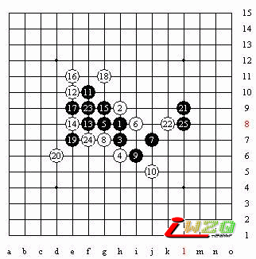

变中求主动【京沪连珠擂台赛之胡瑜VS顾婉卿】
#1 变中求主动【京沪连珠擂台赛之胡瑜VS顾婉卿】 作者：有志青年 发表时间：2007-4-22 10:30:38
今天，上海队先锋顾婉卿三段作为第一位擂主将迎战北京队次锋小将胡瑜四段的挑战。相信两位选手一定会为我们大家献上一场精彩的对局。
北京队次锋胡瑜四段-----上海队先锋顾婉卿三段
再这里先说下这次擂台赛，考虑到五子棋布局规则的特殊性和擂台赛制度的特别性。擂主只需和棋就算守擂成功，而攻擂方要是一直被迫开局，那样太不利了。所以，在比赛规则中规定了这么一条，就是攻擂方有权选择是否布局。胡瑜经过考虑，选择不开局，由擂主顾婉卿开局。其实这里事先是有安排的，从第一轮输了回来，我就和小胡在宾馆认真研究了下对手，因为小胡的开局一般都是疏星平衡局，这样对自己很不利，因为对手肯定回去认真准备这个开局。所以经过研究。决定放弃开局。和对方拼中盘。
顾婉卿经过思考，开松月局，胡瑜经过考虑，提出交换。小顾白4最强防。胡瑜稍微思考后，摆下2打点。黑5是一打，二打-G9。
顾婉卿经过思考后黑5并没有选择2打。而是选择了1打G8，这个点被认为是黑必胜。这个黑5的必胜是由李洪斌潜心研究出来的。胜法非常经典。虽然是必胜，但是白棋防守的方法也是多种多样，实战中也可以来用。我以前比赛中经常开这个开局，而且也是留1点，和对手拼中盘。
说来也巧，再比赛前的准备中。曾经给小胡安排的战术就是开松月局，留必胜点，给小顾留一个复杂胜法。特意把这个变化研究了下。没有想到实战中顾婉卿给小胡开松月，正中下怀。但是小顾能选择开松月留1打，也肯定事先有准备。否则以胡瑜的知识面，不可能不知道这个变化。白6到白10是最正常的变化。胡瑜现在正在长考，估计小胡在考虑下哪个黑11呢，是走老定式。还是走新研究。
我在比赛的场地外也在猜想小胡的思路。感觉黑11会下老的变化。因为新的变化虽然是必胜，但是里面白棋的防守也多种多样，而且复杂的变化很多。赛场里面小胡还在想。看来是在想下那个变化对自己有利。经过10分钟的考虑后。黑11果真下了F10.和对手下老变化。虽然这个点的变化不是必胜，但是对黑来说优势也非常大。白如果防守稍弱，就会被黑棋抓主机会。扩大优势
小胡的黑11老定式，虽然老定式黑不是必胜，但后面的变化对黑来说也是可以下的。不知这样对小顾来说是否是有机会了现在还很难说，现在的比赛不仅要比技术，还有毅力、韧劲，还要有心理战的因素。实战中小顾经过近10分钟的考虑。白12—E10。弱防，这里的白12最强防守在F9，这个白12的结论是黑必胜，胡瑜未经考虑就下了黑13，看来胡瑜黑11下老变化就是为了躲开新11里面的白棋防守，思路很正确。小顾的白14的防守是最强防。胡瑜的黑15直接下在了J10。我个人认为这个黑15下的很有创新。选择对方不熟悉的变化，脱离定式棋谱去和对手拼中盘。而且这手棋优势非常大。只要对手稍有大意。不仔细思考。没有防守在最强，那黑棋在外面扩大优势是比较容易的。如果实战黑15下在G9。见变化图（1）（2）
黑棋可以取胜，但是变化太复杂了。
见变化图（1）
变化图（2）

我个人感觉小顾要么可能不知道白12最强。要么是期望在胡瑜复杂胜中走漏招， 比赛中的实战小顾婉卿经过考虑，下了白16。在观战室的上海棋手们也一致认为这个点白比较强。当告诉他们顾下了这个白16后，他们觉得还能和黑下。赛场里面的顾伟在用笔记本电脑现场解说之余，用软件黑石演算白16之后是否能防住黑棋。但是没有想到，鼠标刚点下去，黑就利马+的230多了。黑胜没有问题。赛场里面的胡瑜连想都没有想。连续黑17、19两手。这个时候白棋要想在防守住黑已经不可能了，黑基本胜了。其实白16最强应该下J8。去年的浙江赛中，胡瑜就这么执白和戴哓涵选手下过一次。在不熟悉的情况下用算路把对手逼和了。小顾在经过近20分钟考虑，白20活三。还在顽强的抵抗。胡瑜黑21稳健，黑棋这个时候的优势越来越大。小顾白22防在I10。想分割开黑两边的联系。估计这个时候胡瑜已经把胜法算得很清楚了，想都没有怎没想。黑23活三，白24冲四，给黑棋制造个4*4禁手。小顾白26后，小胡利马就下了27手。黑简单胜胜了。顾婉卿投子认负。
在上海的第一阶段擂台赛。最后双方已1比1握手言和。但是对北京来说形式有利。因为是擂主，只要在后面的比赛中，小胡下和对手，就算守擂成功！
下面给五子棋爱好者留道目算题。黑棋如何简单胜？
我们下次在北京等着来攻擂了。大家北京见！
#2 Re:变中求主动【京沪连珠擂台赛之胡瑜VS顾婉卿】 作者：友善 发表时间：2007-4-22 20:56:05
留的题目能简单取胜么,不是要杀好多手,况且白可以强防几手的,不怎么好杀,要说是必胜也不大确定吧.更别提简单取胜了,只是取胜倒可以,谈不上简单是吧
#3 Re:变中求主动【京沪连珠擂台赛之胡瑜VS顾婉卿】 作者：无志气广林 发表时间：2010-5-30 10:35:15
学习一下，高手对决不一般